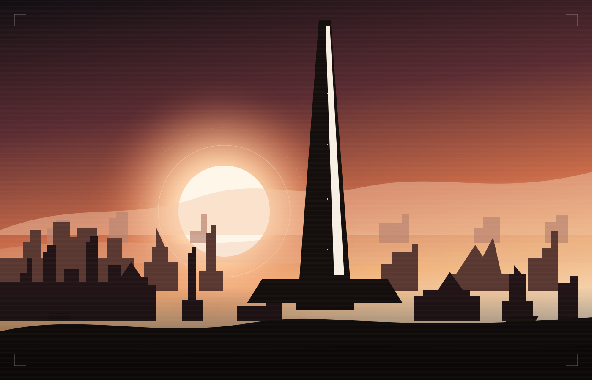

全劇透閱讀依事件發生順序重組，包含主線與前傳的重要轉折。
編排說明 ↗拼回歷史，也保留未知。
本整理僅以 BlablaLink 官方社群站為劇情來源。目前已整理檔案館 Red Ash、Old Tales、Over Zone、Unbreakable Sphere，以及第 00–48 章已讀主幹。早期從灰姑娘與軌道電梯寫起，現代收到第 48 章尚未結束的軌道電梯。小美人魚在饕餮喉嚨裡的七十年，仍未對上這一段主線裡的某一場。有選項的場景尚未遍歷全部分支，個別選項後續亦有待補讀。主線第 00–48 章有名稱與場景數索引，詳細閱讀狀態另列。
事件依發生時間整理，後來才揭露的前因會放回較早的時間位置，並標明來源與推論性質。「約百年前」是概略時期，「五年前封城」相對於第 02 章任務當時；沒有充分依據的年份與因果不作定論。事件摘要與整理者解讀分開呈現，整理者的話不是官方設定。